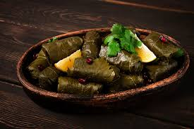

Tolma

Description
A traditional Armenian dish of grape leaves or cabbage rolls stuffed with a savory mixture of ground meat, rice, and herbs often served with garlic yogurt.
Ingredients
- Ground meat (beef, lamb, or a mix)
- Rice
- Onion (finely chopped)
- Garlic (minced)
- Fresh herbs (parsley, dill, cilantro)
- Salt
- Black pepper
- Paprika (optional)
- Tomato paste (optional)
Steps
- Prepare Leaves: Rinse grape leaves or blanch cabbage leaves until soft.
- Mix Filling: Combine ground meat, rice, onion, garlic, herbs, salt, and spices.
- Wrap Tolma: Place filling on a leaf, fold sides, and roll tightly.
- Cook: Arrange rolls in a pot, add water or broth to cover, and simmer until tender.
- Serve: Enjoy with garlic yogurt.